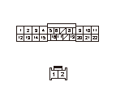
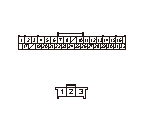

DTC 23
DTC 23:
外スライド パルス異常
点検を始める前に、以下の項目について確認する
•
モータの作動に異常がある場合は、先に症状別故障診断を行う
•
故障診断の進め方を確認する
•
外スライドレール周辺に異物のかみ込み・変形がないことを確認する
•
外スライド スクリューおよびナット部に異物のかみ込み・損傷がないことを確認する
•
ヒューズ ボックス内No.53（30A）ヒューズの点検をする
モータの作動点検
1-1
外スライド モータ2Pカプラの接続を外し、
モータの作動を点検する
◆ モータの作動は正常か
YES
-
ステップ
2
へ進む
NO
-
外スライド モータを交換する
モータとリフタ コントロール ユニット間（ESL FWD、ESL BWDライン）の断線点検
2-1
リフタ コントロール ユニット カプラA（22P）の接続を外す
2-2
外スライド モータ2PカプラのNo.1、No.2端子とリフタ コントロール ユニット カプラA（22P）のNo.14、No.3端子間の導通を点検する
◆ 導通があるか
YES
-
ステップ
3
へ進む
NO
-
外スライド モータとリフタ コントロール ユニット間のコードの断線

センサとリフタ コントロール ユニット間（ESL PLS、SEG、SVCCライン）の断線点検
3-1
リフタ コントロール ユニット カプラB（32P）の接続を外す
3-2
外スライド センサ3Pカプラの接続を外す
3-3
外スライド センサ3Pカプラとリフタ コントロール ユニット カプラB（32P）の端子間の導通を点検する
3Pカプラ
32Pカプラ
No.1端子
No.13端子
No.2端子
No.2端子
No.3端子
No.21端子
◆ 導通があるか
YES
-
ステップ
4
へ進む
NO
-
外スライド センサとリフタ コントロール ユニット間のコードの断線

センサとリフタ コントロール ユニット間（ESL PLSライン）の短絡点検
4-1
リフタ コントロール ユニット カプラB（32P）のNo.13端子とボディ アース間の導通を点検する
◆ 導通があるか
YES
-
外スライド センサとリフタ コントロール ユ ニット間のコードの短絡
NO
-
ステップ
5
へ進む
リフタ コントロール システムの点検（SVCCライン）
5-1
リフタ コントロール ユニット カプラA（22P）を接続する
5-2
リフタ コントロール ユニット カプラB（32P）を接続する
5-3
イグニッション スイッチをON（
II
）にする
5-4
リフタ コントロール ユニット カプラB（32P）のNo.21端子とボディ アース間の電圧を測定する
◆ バッテリ電圧か
YES
-
ステップ
6
へ進む
NO
-
リフタ コントロール ユニットを交換する
リフタ コントロール システムの点検（SEGライン）
6-1
イグニッション スイッチをOFFにする
6-2
リフタ コントロール ユニット カプラB（32P）のNo.2端子とボディ アース間の導通を点検する
◆ 導通があるか
YES
-
ステップ
7
へ進む
NO
-
リフタ コントロール ユニットを交換する
再現テスト
7-1
外スライド センサ3Pカプラを接続する
7-2
外スライド モータ2Pカプラを接続する
7-3
リフト コントロール ユニットの初期位置学習を行う
7-4
リフト アップ シートを格納状態から振出まで作動させる
7-5
自己診断モードでDTCを確認する
◆ DTC 23を吹鳴するか
YES
-
外スライド リミット スイッチ異常の故障診断（DTC 13）を行い
、
再度DTCを確認し
、吹鳴するようであれば
外スライド モータを交換する
NO
-
一過性故障、現在システムは正常
 点検を始める前に、以下の項目について確認する
点検を始める前に、以下の項目について確認する


 点検を始める前に、以下の項目について確認する
点検を始める前に、以下の項目について確認する